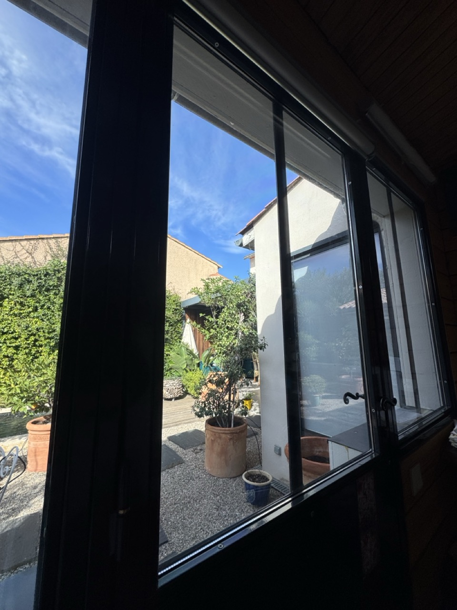
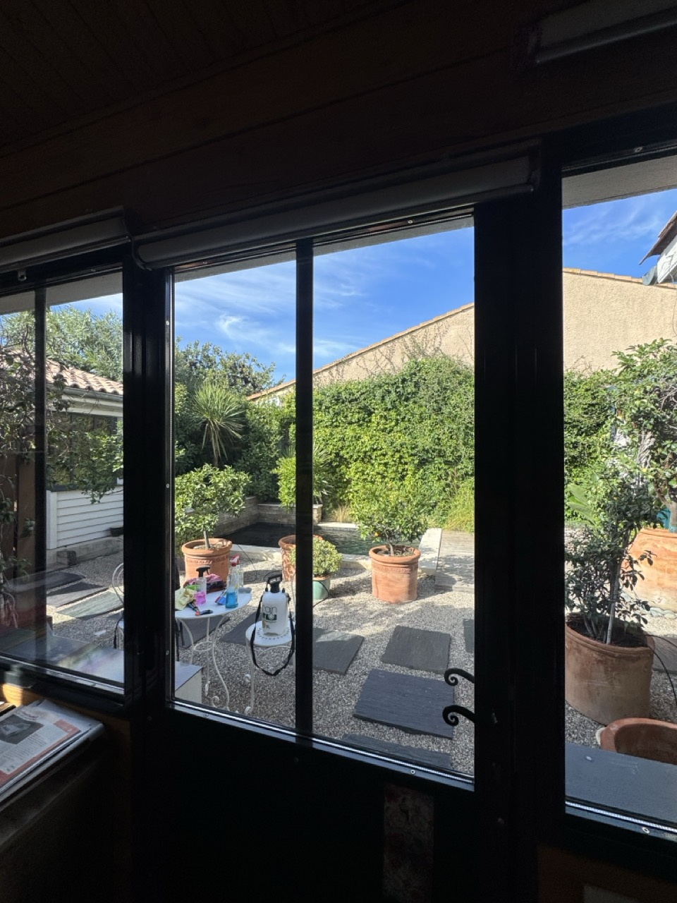
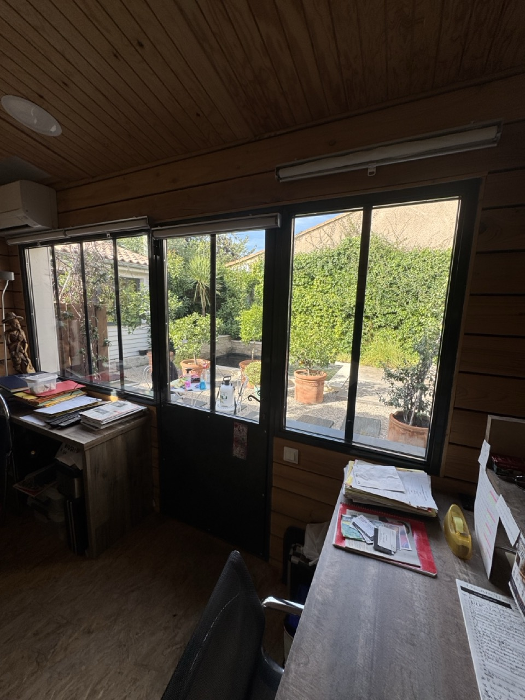

Bureau à la maison · Vitrages exposés plein sud
Un bureau plein sud.
La lumière, sans l’excès.
Dans ce petit bureau climatisé, les fenêtres plein sud reçoivent le soleil une grande partie de la journée. Nous avons posé un film solaire haute performance, presque transparent, pour limiter les apports de chaleur et filtrer 99 % des UV tout en préservant la vue sur le jardin. Découvrez le chantier, côté intérieur et côté extérieur.

Une vue dégagée sur le jardin et un film presque invisible.
Une protection solaire et anti-UV sur les vitrages existants.
Limiter la chaleur solaire et les besoins de climatisation.
Le besoin de départ
Travailler au frais.
Garder le jardin en vue.
Ce bureau installé dans une maison possède une grande façade vitrée orientée plein sud. Cette ouverture apporte une lumière agréable pour travailler, mais l’ensoleillement prolongé accentue la sensation de chaleur près des fenêtres. Dans ce petit volume déjà climatisé, le besoin était de réduire les apports solaires avant qu’ils ne viennent réchauffer la pièce.
Le projet poursuivait deux objectifs : améliorer le confort ressenti au poste de travail et réduire les sollicitations de la climatisation, pour mieux maîtriser la consommation électrique en période chaude. Fermer les stores toute la journée aurait privé le bureau de sa vue et de sa lumière naturelle.
Quelle protection pour des fenêtres plein sud ? ↗Un film solaire presque transparent, choisi pour cet usage.
Nous avons retenu un film de dernière génération à haute performance, avec un rendu très discret. Il filtre 99 % des UV et agit sur les apports solaires, tout en laissant largement profiter de la lumière et de la vue sur l’extérieur. L’enjeu était de trouver le bon équilibre pour une pièce de travail occupée au quotidien.
Ce choix privilégie la clarté : le niveau de rejet de chaleur n’est pas celui d’un film plus fortement teinté ou réfléchissant. C’est précisément l’intérêt d’une sélection sur mesure, selon l’exposition, le vitrage et les priorités des occupants.
Le traitement conserve les menuiseries existantes. La préparation du verre, l’application, le marouflage et les finitions font partie de la qualité de la pose. Les séquences ci-dessous permettent de voir les gestes au plus près du vitrage.
Découvrir notre savoir-faire de pose ↗Le résultat côté intérieur
Le même jardin.
Un vitrage équipé, en toute discrétion.
Ces trois photos et ces deux vidéos montrent le bureau depuis l’intérieur après l’intervention. On retrouve la vue sur la cour végétalisée, les rangements du quotidien et la climatisation existante. Le film reste discret sur le vitrage : le choix était de conserver l’ouverture et la luminosité de cet espace de travail.






Cliquez sur une photo pour l’agrandir. Les vidéos se lancent à votre demande, sans son.
La transparence, de près
Une vue rapprochée depuis le bureau pour observer le vitrage traité et la visibilité vers le jardin.
Le bureau, côté intérieur
Un second angle intérieur pour découvrir l’ensemble vitré et le rendu du film dans la pièce.
Sur le terrain
Un chantier.
La pose, en trois séquences.
Le rendu, le geste et le détail : lancez les séquences qui vous intéressent. Toutes les vidéos sont sans piste audio.
Le rendu après la pose
Une vue d’ensemble des vitrages équipés du film solaire transparent, avec la vue et les reflets conservés.
Le geste de pose
Le marouflage à la raclette accompagne l’application du film et l’évacuation de la solution de pose.
Ouvrir la version légère · mobile ↗Le film, de plus près
Un plan rapproché du vitrage pour observer l’aspect transparent du film et les détails de finition.
Pour avancer dans votre projet
Du conseil.
Au concret.
Une baie plein sud ou ouest
Choisir selon la chaleur, la lumière et les usages de la pièce.
↗Après la poseLes bons gestes d’entretien
Nettoyer un vitrage équipé sans abîmer le film.
↗Votre budgetUne première fourchette de prix
Estimer la fourniture et la pose avant un devis personnalisé.
↗Conseil, fourniture & pose · Opalis Solaire
Votre bureau chauffe au soleil ?
Parlons du bon film.
Partagez les dimensions et quelques photos. Nous étudions une solution compatible avec vos vitrages.